Prepare a Setlist for your Tango DJ set. Start with individual tracks, reuse music from previous Setlists, or use Tandas you have prepared earlier. Narrow large selections with Smartlists or the quick A / T / V / M / X filters.
(A=All / T=Tango / V=Vals / M=Milonga)
The basic idea: TandaComposer helps you build and check a Setlist before exporting it as an M3U8 playlist for the player you use for the actual evening.
01
Get your music into TandaComposer
Before you can build a Setlist, TandaComposer needs to know where your music is. The first step is to add the folders containing your music to the Track Library.
Add your music folders
Add the folders that contain the audio files you want to use. TandaComposer scans these folders and creates a Library of the tracks it finds.
Let the Library keep track of your music
The audio files themselves are not copied into the Library. The Library keeps the information needed to find and use the music files in their existing locations.
Lock the Library for normal work
Once your Library is ready, leave it locked while you build Setlists. This protects the Library from accidental changes.
What the lock means
The Library lock controls whether the Library itself can be changed. The same Library lock applies when you are working in the Track Library or the Tanda Library.
Locked — Library protected from changes
Unlocked — Library changes are enabled
Keep it locked during normal Setlist work. Unlock the Library only when you want to change the Library itself — for example when importing music, changing import sources, performing Library maintenance or editing tags. Unlocking is not needed to build a Setlist.
Your audio files stay untouched — with one exception. Building Setlists, creating Tandas, using Smartlists and exporting do not change your music files. Only Edit Tags… (experimental, see chapter 04) writes into the audio files themselves.
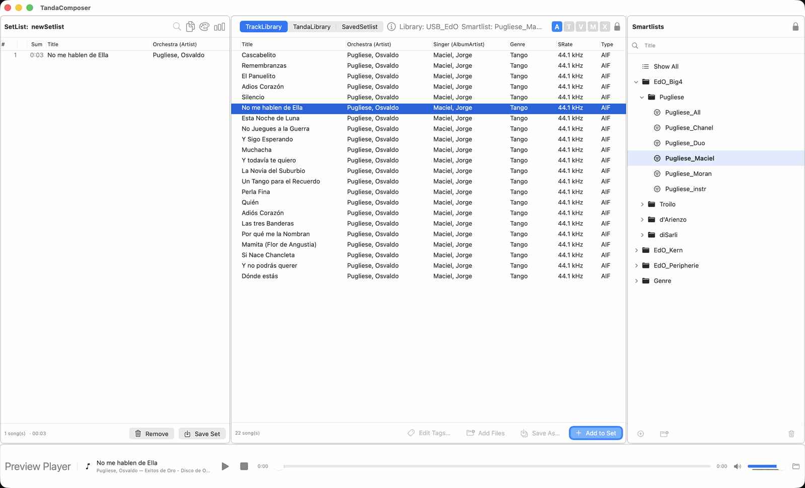
The main workspace: Setlist on the left, Track Library in the middle, Smartlists on the right, Preview Player at the bottom.
The Library lock is shown beside the A / T / V / M / X filters. The Smartlists pane has its own lock; it protects the Smartlist and folder structure separately. See Smartlists for details.
02
Start with a Setlist
The Setlist is where you prepare the music and its order for your evening. There is no single right way to build it.
Start from scratch
Find tracks in your Library and drag them into a new Setlist.
Reuse an old Setlist
Take individual tracks from a saved Setlist and use them in the new one.
Reuse a Tanda
Drag a previously prepared Tanda into the Setlist, then change it if needed.
Working with a large Library? Use a Track Smartlist to narrow the selection before choosing tracks. For a quick filter, the A / T / V / M / X buttons can narrow the visible tracks by type. See Smartlists and A / T / V / M / X filters.
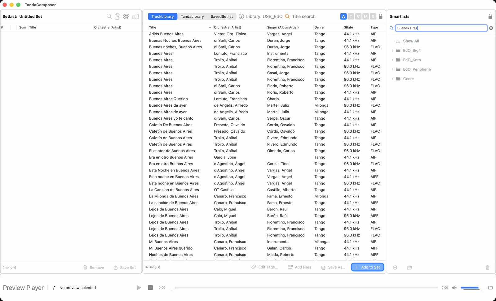
Starting point: an empty Setlist on the left, the Track Library in the middle.
The main workspace brings the Setlist, Library and the other libraries/tools together. The Preview Player is available while you prepare your music.
03
Three ways to add music
Choose whichever source fits the job. You can mix all three approaches in the same Setlist.
1. From the Track Library
Browse or filter your Library, select one or more tracks, and drag them into the Setlist.
2. From a saved Setlist
When an earlier Setlist contains tracks you want to use again, select the tracks you need and copy/drag them into the current Setlist.
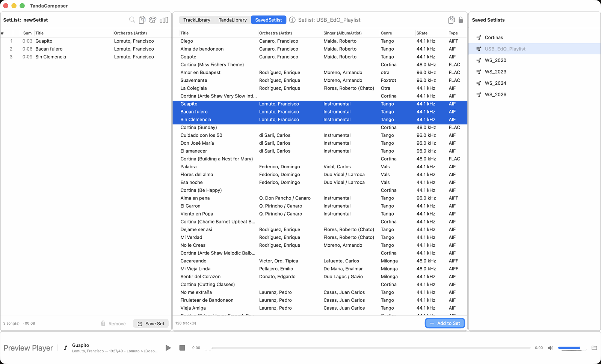
Building from a saved Setlist: select a group of tracks in the saved Setlist (middle) and drag it into the new Setlist (left).
3. From the Tanda Library
A Tanda is a group of 3–8 tracks that you have previously put together because you consider them a good combination. Drag the Tanda into the Setlist and adjust individual tracks if you want.
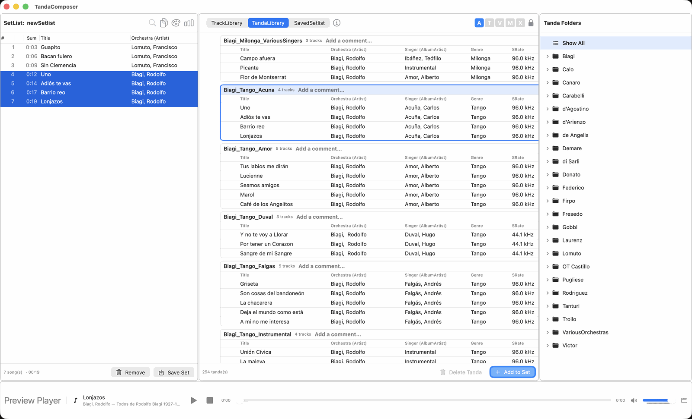
Building from the Tanda Library: drag a saved Tanda into the Setlist. The Tanda folders are listed on the right.
Important: TandaComposer does not automatically decide that a Tanda is musically harmonious. The Tandas in your Tanda Library are groups you have defined and saved yourself.
04
Choose tracks from the Library
The Track Library is the main place to find individual tracks for your Setlist.
Library lock: You can browse, filter and use tracks for Setlists while the Library is locked. Unlock it only for changes to the Library itself.
Browse and select
Select one track or several tracks.
Drag the selection into the Setlist.
Drop it at the position where you want the track(s) to appear.
Move tracks later by dragging them within the Setlist.
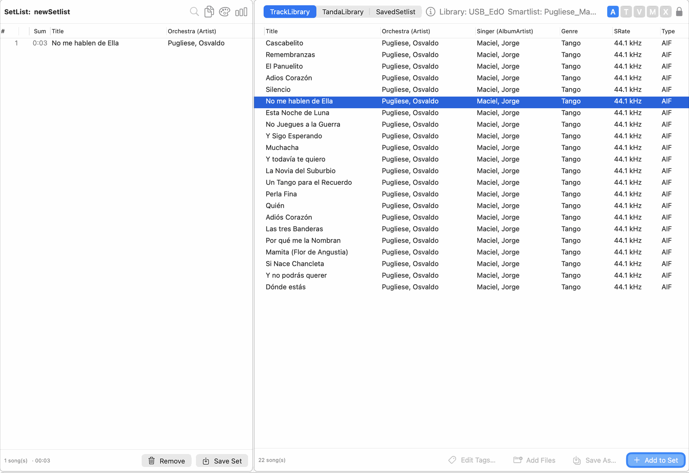
Select tracks in the Track Library and add them to the Setlist.
Find other versions of a track with the Same-Name filter
To find other recordings of a Setlist track, select or focus that track in the Setlist and click the magnifier button in the Setlist header. The existing TrackView is filtered to show tracks whose titles match the focused Setlist track; no separate Same Title window opens.
The magnifier button in the Setlist header is grey when the filter is off and orange when it is active. Click it again to turn the filter off.
While the filter is active, moving the focus to another Setlist track automatically updates the TrackView filter to that track's title.
A matching title ignores differences in letter case, accents and extra spaces. A title such as “Poema (remastered)” remains different from “Poema”.
An orange magnifier with the label Same title appears next to the Library name in the TrackView header while the filter is active. It is a status indicator, not a second button.
The magnifier in the Setlist header is the filter's only control.
Smartlists are visually dimmed while the filter is active. The A / T / M / V / X quick-filter controls are unavailable during the Same-Name filter.
Choose a result and add it to the Setlist using the normal TrackView insertion action. This inserts a track; it does not replace the focused Setlist track.
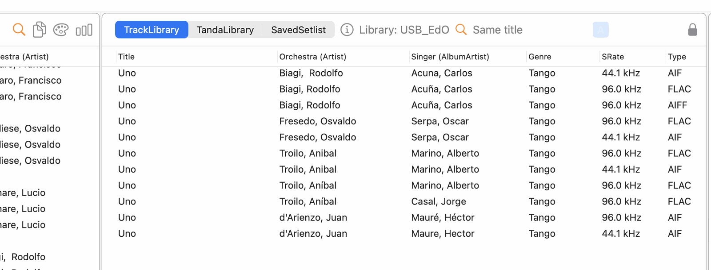
The Same-Name filter is on: the magnifier in the Setlist header is orange, the TrackView header shows “Same title” and lists all recordings with that title.
Note: The filter searches the Track Library for matching titles. It changes which tracks are shown, not the normal insertion behavior of TrackView.
Quickly narrow the visible tracks
The A / T / V / M / X buttons provide a quick type filter. They can be used on the current Library view, including a Smartlist result where applicable.
A
Show all / turn the dance-type filter off.
T
Show tracks classified as Tango.
V
Show tracks classified as Vals.
M
Show tracks classified as Milonga-type music according to the application's Genre handling.
X
Show tracks outside the T/V/M categories, including untagged tracks.
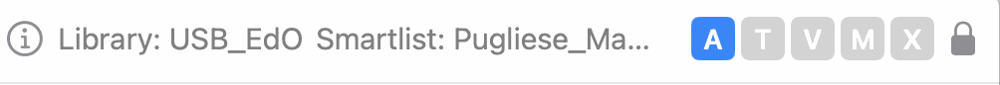
The quick type filters above the Track Library: A = show all, T = Tango, V = Vals, M = Milonga, X = other. A is active here.
These are filters, not musical recommendations. The classification is based on the track's Genre information and the application's matching rules.
Search tracks by title
Use the search field at the top of the Smartlists pane, above Show All, to find a track by its title.
One letter shows the titles that start with that letter. Two or more letters show the titles that contain the text. For example, a finds titles beginning with A, and cump finds “La Cumparsita”.
Only the title is searched, not orchestra, singer or file name. Tracks without a title never match.
Letter case, accents and extra spaces at the start or end are ignored, so a also finds “Ángel”.
While a search is active it replaces the Smartlist: the Track Library shows every matching track of the whole Library, the Smartlists pane is dimmed and the A / T / V / M / X buttons are unavailable. The Library header shows Title search with an orange magnifier.
To end the search, click × in the field or press Esc. Double-clicking Show All or a Smartlist also ends it, and so does switching to another Library.
The search only changes what is shown. It does not change your Library, and the Maintenance tools are not affected by it.
The Same-Name filter described above takes precedence while it is on.
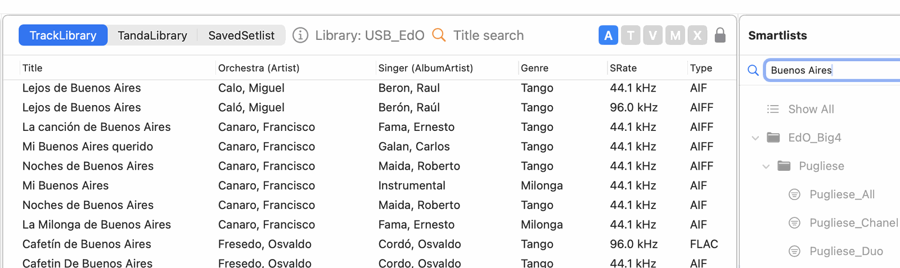
Searching for “Buenos Aires”: the header shows Title search, the Smartlists are dimmed and the A / T / V / M / X buttons are unavailable.
Edit track tags (experimental)
This changes your audio files. Unlike everything else in TandaComposer, Edit Tags… writes the new values into the music files themselves — not just into the Library. There is no Undo. Read this section before you use it, and try it on a few copies of tracks first.
Select one or more tracks, then click Edit Tags… to change Title, Orchestra (Artist), Singer (AlbumArtist), Genre, Year or Comment directly in the audio file(s) — no need to leave TandaComposer for a separate tagging tool.
Apply writes immediately. There is no further confirmation after you click Apply.
Select several tracks to edit them together — a field only shows a value if every selected track already shares it; otherwise it starts blank ("Multiple Values"). Typing something into a field sets it for all selected tracks.
Leaving a field blank leaves it unchanged — there is currently no way to clear a tag to empty through this dialog.
Every field that contains text is written, including prefilled values you did not touch. Changing only the Genre of a single track therefore also rewrites that track's Title, Orchestra, Singer, Year and Comment with the values shown.
After a successful write, the Library shows the new values right away.
SCREENSHOT PLACEHOLDER — Edit Tags
The Edit Tags dialog for one or more selected tracks.
The backup copy
Before the first change to a file, TandaComposer saves a copy of the original next to it. The copy has the original file name plus _original — for example track.flac becomes track.flac_original.
It is made once. If a backup already exists it is never overwritten, so later edits keep the true original.
It is not deleted automatically. Each backup takes as much disk space as the track itself. Delete the _original files yourself once you are happy with the result.
To go back, replace the edited file with its _original copy and give it the original name again, then run Rescan TrackLibrary. If the Library does not notice the restored file (it may look unchanged to the Library), the old tags can keep showing until the track is re-read.
The _original files are not added to the Library as tracks.
When something goes wrong
If a file cannot be written (for example it is read-only, on a disconnected drive or in an unsupported format), that file stays as it was and TandaComposer names it in an error message. The other selected tracks are still updated.
If only the Library display fails to refresh, the files are correct; Rescan TrackLibrary brings the display up to date.
Library lock applies here too. Edit Tags needs the Library unlocked, same as Add Files. Lock it again when you are done.
Experimental. This is a new feature and hasn't seen as much real-world testing yet as the rest of the app. It covers FLAC, MP3, M4A/AAC and AIFF files. Before editing many tracks, make sure you have a current backup of your music folder (for example with Time Machine).
05
Arrange and refine your Setlist
Once tracks are in the Setlist, the Setlist becomes your working area. Add, remove and rearrange tracks until the sequence suits your plan.
Typical editing workflow
Add tracks
Drag tracks from the Library, an older Setlist or the Tanda Library into the current Setlist.
Arrange the order
Drag tracks within the Setlist to move them to the desired position.
Replace or remove
Change individual tracks when a different choice fits the sequence better.
Listen through
Use the Preview Player to check individual tracks before the Setlist is finished.
Save your work
Save the Setlist so you can return to it later or use it as a source for another Setlist.
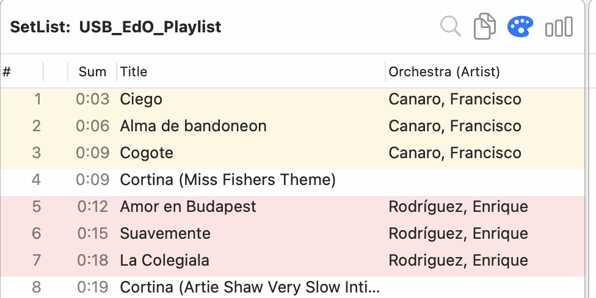
The Setlist with Tanda Coloring switched on and the running time in the Sum column.
A practical approach: You can work track-by-track first and later save a successful group as a Tanda. Or start with a prepared Tanda and modify it in the Setlist. The Setlist remains the place where the final sequence is decided.
06
Use and create Tandas
Tandas are a convenient way to reuse groups of tracks you have already prepared. They are optional — you can build an entire Setlist without using them.
What is a Tanda?
A Tanda in the Tanda Library is a saved group of 3–8 tracks that you have chosen because you think the tracks work well together.
Tell it like it is: TandaComposer stores and reuses your Tandas. It does not judge whether the tracks actually harmonize musically.
The same Library lock applies here. You can browse and use saved Tandas while the Library is locked. Unlock the Library only when you need to change its contents or perform Library maintenance.
Find a prepared Tanda
Tandas can be organized in the Tanda Library using folders / Smartlists. This is useful when you have many combinations, for example different orchestra / singer combinations.
Double-click a Tanda Library folder or Smartlist to restrict the Tanda Library display to that selection.
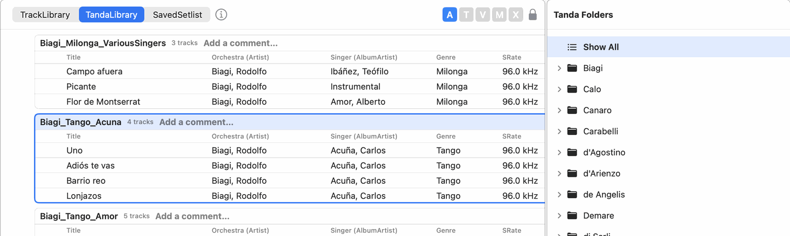
The Tanda Library: saved Tandas on the left, the Tanda folders on the right.
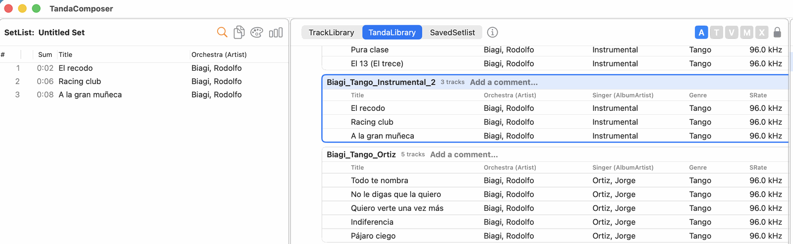
A Tanda selected in the Tanda Library (blue frame) and the same tracks inserted into the Setlist on the left.
Use a Tanda in your Setlist
Find the Tanda
Use the Tanda Library folders / Smartlists and, if useful, the A / T / V / M / X filters.
Drag it into the Setlist
The saved group is inserted as a group of tracks.
Adjust it if needed
You can change the resulting tracks and their order in the Setlist.
Create a Tanda for later reuse
Select 3–8 tracks in the Setlist
Choose the tracks you want to preserve as a group.
Drag the selection to the Tanda Library
TandaComposer validates the selection and saves the Tanda.
Organize it for later
Place it in the appropriate Tanda Library folder / Smartlist structure if desired.
Edit a saved Tanda
You don't need to delete and recreate a Tanda just to add or remove a track — an existing Tanda can be edited directly in the Tanda Library.
Select a Tanda — click its title / track-count. Click it again to deselect. (Clicking elsewhere in the same header, such as the comment field, does not select or deselect it.)
Add tracks from the Setlist — select them in the Setlist, then drag the selection directly onto the Tanda you want to add them to (rather than onto empty space, which creates a new Tanda instead).
Remove a single track — with the Tanda selected, click the small red "x" next to the track. It only appears for the selected Tanda, and only once at least 4 tracks remain (a Tanda can't go below 3).
SCREENSHOT PLACEHOLDER — Editing a Tanda
A selected Tanda with the per-track remove control visible.
The Library lock applies here too. Both actions above need the Library unlocked, same as creating or deleting a Tanda.
Add an individual track to a Tanda Library
When a Tanda Library is selected and the Library is unlocked, an empty + row appears at the bottom of its track list. Drag a track from the Setlist and drop it onto this row to add it to the selected Tanda Library.
The + row is an insertion target, not a saved placeholder or a track.
The same track cannot be added twice to the same Tanda. Identity is based on the track/file, so a different recording with the same title is allowed.
Adding a track to the Tanda Library does not change or remove it from the Setlist.
When the Library is locked, the + row is hidden and adding tracks is unavailable.
The Tanda's name and folder don't update automatically. A Tanda's file name and Tanda Library folder are chosen once, from the Orchestra/Singer/Genre of its tracks at the time it's created. Editing its tracks afterwards never renames or moves the file — even if the change means the name no longer quite fits. If that drift bothers you, Rescan TandaLibrary (see Maintenance) will offer to rename/refile it to match.
07
Smartlists
Smartlists are reusable filters. They are especially useful for experienced users with a large Library who want to reduce the number of tracks they have to browse before building a Setlist.
The Smartlists lock is separate
The lock in the Smartlists pane protects the Smartlist and folder structure. It is independent of the Library lock.
🔒Locked — browse and use Smartlists, but do not change their structure
🔓Unlocked — create, edit, move or delete Smartlists and folders
Important: Double-clicking a Smartlist or folder to use it does not require unlocking. Unlock the Smartlists pane only when you want to change the Smartlist structure itself.
Share Smartlists as a ZIP file
Use Tools → Export → Smartlists (ZIP)… (or Smartlists → Export (ZIP)…) to save your whole Smartlist tree in one file, and Tools → Import → Smartlists (ZIP)… to load it again.
If a ZIP with that name already exists, the number is counted up: Smartlists.zip, Smartlists_2.zip, Smartlists_3.zip… An existing file is never overwritten.
The import copies the contents into the internal Imported folder. If that folder already has content you are asked before it is replaced, so move what you want to keep out of Imported first.
Import is only possible while the Smartlists pane is unlocked.
A folder from an older export can still be chosen in the import dialog.
Backup All and Restore All from Backup are separate and work as before.
Track Smartlists
Define a Track Smartlist using the metadata available in your Library. For example, you can create a selection for Canaro, or a more specific selection such as Canaro with Maida as singer, if the corresponding information is present in the track metadata.
Choose fields such as Title, Artist, AlbumArtist, Genre, Year or Grouping.
Use the available matching rules such as is, is not, contains and does not contain.
For Year, range conditions such as is between are available.
Combine conditions so that all or any conditions must match.
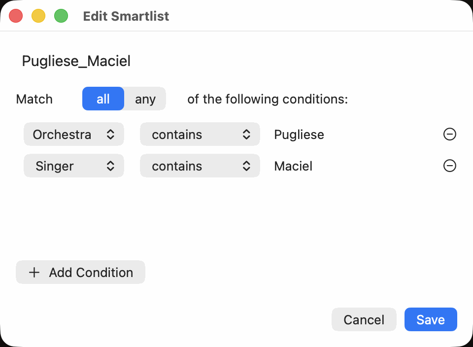
The Smartlist editor: a name, the matching rule (all / any) and the conditions.
Use a Track Smartlist while building a Setlist
Apply the Smartlist to narrow the Library view. The resulting tracks can then be selected and dragged into the Setlist just like tracks from the full Library.
Smartlists and A / T / V / M / X can work together. A Smartlist can make the selection specific — for example, Canaro + Maida — while the quick buttons can further narrow the displayed result by dance type where the filter is available.
Tanda Library Smartlists
The same idea is useful in the Tanda Library. Your saved Tandas can be organized into folders / Smartlists, for example by orchestra and singer combination. Double-clicking a folder / Smartlist restricts the Tanda Library display to that selection.
SCREENSHOT PLACEHOLDER — Tanda Smartlist navigation
A close-up showing the Tanda Library folders / Smartlists and the narrowed result after double-clicking.
Quick type filters in the Tanda Library
The A / T / V / M / X buttons are also available for the Tanda Library. They narrow the current Tanda view by type, on top of the folder / Smartlist selection already active.
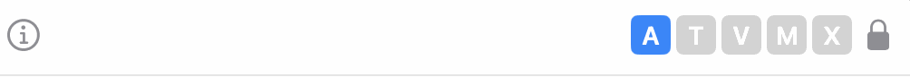
The same quick filters above the Tanda Library. A (show all) is active.
The exact meaning of the categories follows the application's Tanda classification. Use the buttons as a quick browsing filter, not as a judgement of musical quality.
Truth about Smartlists: Smartlists filter information already present in the Library. They do not listen to the music or determine whether two tracks are musically compatible.
08
Preview and check your Setlist
Before exporting, use TandaComposer to inspect the sequence and listen to tracks where needed.
Preview a track
Double-click a Library track to load and start it in the Preview Player.
Double-click a Setlist track to preview that track from the current Setlist.
Use the Preview Player for preparation and checking; it is not intended to replace the DJ player used for the actual evening.
Tanda Coloring
The palette button in the Setlist header toggles the visual Tanda Coloring. It gives you a quick indication of Tango, Vals and Milonga-type tracks based on the track's Genre metadata. Coloring is off by default; turn it on when the visual guidance is useful.
It is visual guidance, not automatic Tanda detection. The coloring does not decide which tracks belong together.
Tanda statistics: orchestras and years
The bar-chart button in the Setlist header opens an overview of the current Setlist.
Tandas by Orchestra counts the Tandas per orchestra. The Setlist is divided into Tandas at the Cortinas. A Tanda whose tracks come from different orchestras, or whose orchestra tag is missing for some tracks, is counted as Mixed.
Songs by Year shows how many songs come from each year, using the year in the track tags. The bars are coloured by tango era. Songs without a valid year are not counted, and the year axis only covers the years that actually occur.
It is a quick check of the balance of your evening. It does not change the Setlist.
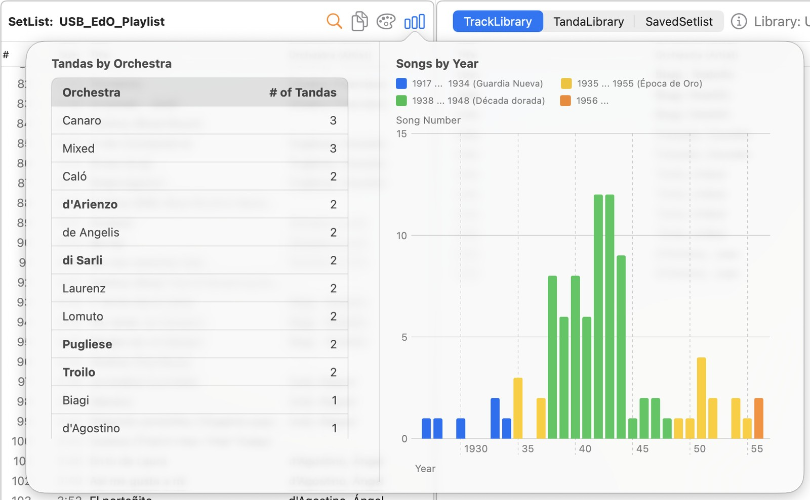
Tandas by Orchestra (left) and Songs by Year (right) for the current Setlist.
A quick final check
Is the order what you want?
Are the tracks available?
Are there any accidental duplicates?
Is the mix of orchestras and years what you want? (Tanda statistics)
Does the sequence make sense to you?
Have you previewed anything you are unsure about?
09
Save and export
When the Setlist is ready, save it and export it for the player you will use for the actual DJ set.
Save the Setlist
Keep the working Setlist so you can reopen it later or reuse tracks from it. The save file records which tag fields you use for Orchestra and Singer.
For the player: Current Setlist (M3U8)…
Open the Tools menu, then Export, and choose Current Setlist (M3U8)…. TandaComposer creates an .m3u8 playlist referring to the actual music files.
For another TandaComposer user: Current Setlist (JSON)…
Same Export menu: Current Setlist (JSON)… writes a JSON file with the full track data, including Orchestra / Singer convention and file hashes.
Open the M3U8 in your player
Use the playlist with a player that supports M3U8. The current workflow has been tested with Apple Music.
The playlist does not contain the audio. The music files must remain accessible at the paths referenced by the M3U8 playlist. The JSON export also contains no audio.
Import and export are in the Tools menu.Tools → Export and Tools → Import list everything that moves data out of or into TandaComposer: Setlists, Smartlists, your TandaLibrary for sharing, and a backup of all data. The Setlist menu itself only manages Setlists (New, Open, Delete).
Import a Setlist. Use Tools → Import → Setlist from List or M3U8… for an M3U8 playlist, a text list, or a TandaComposer Setlist JSON file. Tracks are matched against your TrackLibrary. When every track is found by exact path, a short confirmation is enough; otherwise a window opens so you can pick the right tracks by hand.
Import a Setlist from a list, M3U8 or JSON (experimental)
Open the Tools menu, then Import, and choose Setlist from List or M3U8… to create a new Setlist from an .m3u8 playlist, a text list, or a Setlist JSON exported from TandaComposer.
Tracks are matched against your TrackLibrary. Exact path matches are taken automatically; anything else can be picked by hand in a window.
For a JSON file the window shows which tag fields the sender uses for Orchestra and Singer (next to yours). Names are compared by role; file hashes find the same audio even when tags differ.
When every track is an exact path match, only a short confirmation is shown. The tracks land in a new saved Setlist named after the file (or the name stored in the JSON). An existing Setlist is not overwritten; you may be asked whether to save the Setlist you are working on first.
When the import is done, a summary lists the paths that were not found in the Library and any lines that could not be read as file paths.
Maintenance
10
Maintenance
Normally you only need Maintenance when music files have been moved, renamed, deleted or are temporarily unavailable — or, for Tandas, after editing a Tanda's tracks leaves its saved name a poor fit.
SCREENSHOT PLACEHOLDER — Maintenance menu
TandaComposer Maintenance menu.
First: check whether the drive is available
If your music is on an external drive, reconnect it before using Rescan. A temporary disconnect does not mean the files are gone.
Rescan
The Rescan tools first show what they found. Nothing is written until you choose Apply Fixes.
Rescan TrackLibrary
Re-check imported folders for new, moved or missing files.
Rescan Setlist
Re-check the current Setlist against the Library.
Rescan TandaLibrary
Re-check saved Tandas against the Library, including outdated saved paths and Tandas whose name/folder no longer matches their current tracks.
Rescan Saved Setlists
Re-check saved Setlists, including ones that are not currently open.
Status dots
Dot
Meaning
Typical next step
No dot
The track reference is resolved.
Nothing to do.
Orange octagon
The file was not found, either at the last check or when you tried to play it with a double-click.
Reconnect the drive or check the file, then rescan.
Blue question mark
The track is not in the current Library.
Import the file, then rescan.
Orange triangle
Tanda-only: the file was found at a new location but the saved Tanda path is old.
Rescan the Tanda Library.
SCREENSHOT PLACEHOLDER — Status dots
TandaComposer status dots (orange octagon / blue question mark / orange triangle).
Clean Up Missing Links
Use this when a file is permanently gone and you want the Library to stop tracking it. This removes the Library record, not the actual audio file.
SCREENSHOT PLACEHOLDER — Clean Up Missing Links
Clean Up Missing Links action in the Maintenance menu.
Other maintenance actions
Manage Import Sources — review the folders used as music sources.
Compact TrackLibrary — reclaim database space after extensive cleanup.
11
Other tools
These tools are useful when you need them, but they are not part of the normal Setlist-building workflow.
Find Duplicates
Inspect possible duplicate tracks in the Library.
Export / Import
Tools → Export and Tools → Import: Setlists, Smartlists, your TandaLibrary for sharing, and backups.
Backup
Save a backup of all data before major changes or when moving to another Mac.
Settings
Adjust available appearance and audio preferences.
Locks
Protected Library and Smartlist areas can be unlocked when you need to make changes. Editing tags needs the Library unlocked.
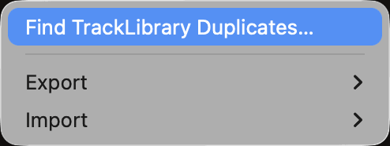
The Tools menu with Find TrackLibrary Duplicates…, Export and Import.
Backup before a major change. If you are moving to another Mac or making extensive Library changes, use Tools → Export → Backup All (Libraries, Setlists, Smartlists)… first. Tools → Import → Restore All from Backup… brings a backup back; it overwrites files with the same name and needs the Library unlocked.
Share your Tandas with others (experimental)
Your TandaLibrary can be packed into a ZIP so that someone else can load your Tandas into their own TrackLibrary. The ZIP does not contain any music.
Export:Tools → Export → TandaLibrary (JSON-ZIP)…
A complete copy for TandaComposer users: your Tanda files exactly as they are stored, in the same Orchestra / Singer folders, one JSON file per Tanda. They contain the full data of every song, including the file paths on your Mac. Nothing in your TandaLibrary or your music files is changed.
Each Tanda records which tag field your Orchestra and Singer come from (orchestraSource and singerSource, set in Settings), so whoever imports it knows how to read the tags. Older Tanda files that do not record this yet get it added in the ZIP only; your own files are never changed.
If the file name is already taken, the number is counted up (TandaLibrary 2026-11-05.zip, TandaLibrary 2026-11-05_2.zip, …). An existing ZIP is never overwritten.
Import:Tools → Import → Tandas from ZIP…
Choose a ZIP made with TandaLibrary (JSON-ZIP)…. A window shows the orchestra folders on the left. Pick one folder at a time; its Tandas are then matched with your TrackLibrary.
For JSON Tandas the window shows which tag fields the sender uses for Orchestra and Singer, next to yours. The names are compared by role, not by tag field, so an orchestra the sender keeps in AlbumArtist is still compared with the orchestra in your Orchestra field.
JSON Tandas carry the file hash of every song. A track whose file is identical to one in your TrackLibrary is found even if the tags differ. The sender's file paths and database ids are not used to find your tracks, except when the same path exists on your Mac.
Each Tanda has a status: Ready (every track found, checked for import), Needs help (a track is missing or ambiguous), Already in your TandaLibrary, or Not possible (for example fewer than 3 or more than 8 tracks, or a file is missing on disk).
A track counts as found when the exact file matches, when it exists as several files of the same recording and Settings → Auto-pick best file chose one, or when exactly one track in your TrackLibrary agrees in title, orchestra and singer. Show tracks lists the tracks found, with year, length and file type, so you can check each one.
For a Tanda that Needs help, click Choose tracks and pick the right track from the candidates. Once every track is chosen the Tanda becomes Ready.
Click Import to save the checked Tandas. Folder and name come from your own tags, so they can differ from the ZIP.
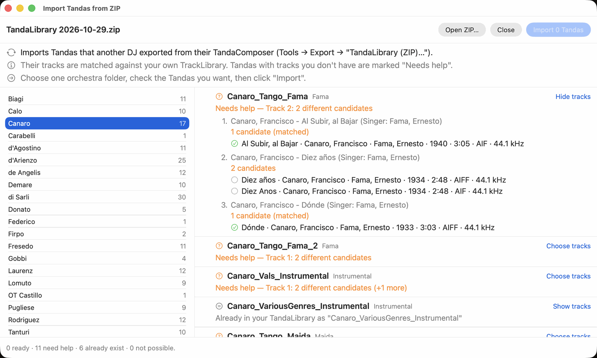
Tools → Import → Tandas from ZIP…: orchestra folders on the left, the Tandas of the chosen folder with their status on the right.
Imported Tandas can only be removed one by one (Delete Tanda). Make a backup first. A Tanda is "already there" only when it uses exactly the same files; the same Tanda in another file format is imported as a new Tanda.
Also in the Import menu: other import actions are described in their own sections.
Reference
Quick reference
Task
Where / How
Build a Setlist from scratch
Select tracks in the Library → drag to Setlist
Reuse tracks from an old Setlist
Select tracks in a saved Setlist → copy/drag to the current Setlist
Use a prepared Tanda
Find it in Tanda Library → drag to Setlist
Create a Tanda
Select 3–8 Setlist tracks → drag to Tanda Library
Select / deselect a Tanda
Click its title / track-count; click again to deselect
Add tracks to an existing Tanda
Select Setlist tracks → drag onto that Tanda
Remove a track from a Tanda
Select the Tanda → click the red "x" next to the track
Edit track tags (experimental)
Unlock the Library → select track(s) in Track Library → Edit Tags… (writes into the audio files; a _original backup is kept)
Narrow a large Track Library
Apply a Track Smartlist
Quick type filter
A / T / V / M / X buttons
Search tracks by title
Search field above Show All in the Smartlists pane: one letter = title starts with, two or more = title contains; Esc or × ends the search
Find other versions of a track
Focus a Setlist track → click the magnifier button in the Setlist header to filter TrackView by matching title; click again to turn off
Add a track to a Tanda Library
Unlock and select the Tanda Library → drag a Setlist track onto the + row at the bottom
Open / create a Library while locked
Use Open TrackLibrary or New TrackLibrary; no unlock or save is needed for the locked current Library
See how the Library modes work
i button in the Library header, or Help → How the Library Modes Work…
Filter Tanda Library
Double-click a Tanda Library folder / Smartlist; optionally use A / T / V / M / X
Preview a track
Double-click a Library or Setlist track
Tanda Coloring
Palette button in the Setlist header
Tanda statistics (orchestras, years)
Bar-chart button in the Setlist header
Save a Setlist
Save Set
Export a Setlist for the player
Tools → Export → Current Setlist (M3U8)… → .m3u8
Export a Setlist as JSON (share)
Tools → Export → Current Setlist (JSON)…
Import a Setlist (list, M3U8 or JSON)
Tools → Import → Setlist from List or M3U8…
Share your Tandas (experimental)
Tools → Export → TandaLibrary (JSON-ZIP)…
Import Tandas from a ZIP (experimental)
Tools → Import → Tandas from ZIP… → choose one orchestra folder → check the Tandas → Import
Export / import Smartlists (ZIP)
Tools → Export / Import → Smartlists (ZIP)… (also in the Smartlists menu); an existing ZIP name gets the next number
Find duplicates
Tools → Find TrackLibrary Duplicates…
Rescan
Maintenance → appropriate Rescan action
Remove links to permanently missing files
Clean Up Missing Links
Review import folders
Manage Import Sources
Reclaim database space
Compact TrackLibrary
Back up
Tools → Export → Backup All (Libraries, Setlists, Smartlists)…
Restore a backup
Unlock the Library → Tools → Import → Restore All from Backup… (overwrites files)